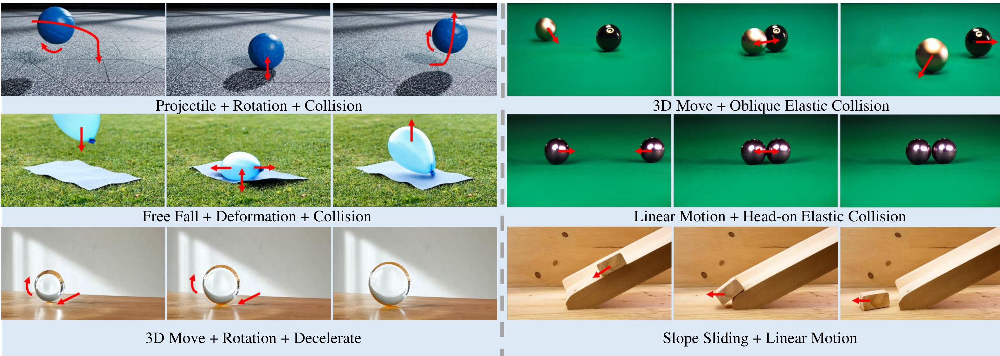
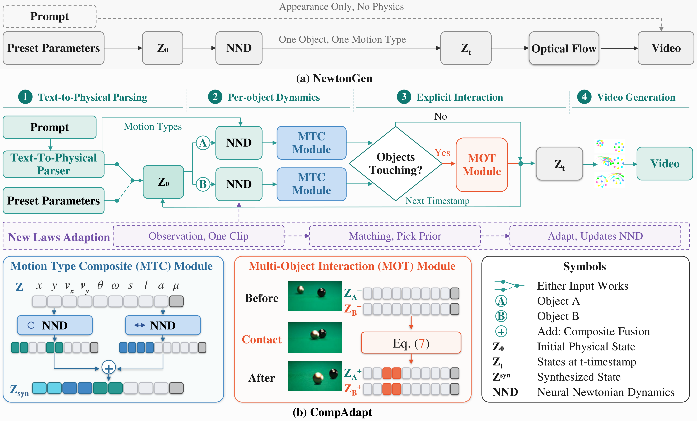

CompAdapt:
Adaptable Composite Motion Modeling
for Physics-Consistent Text-to-Video Generation
arXiv preprint · 2026
Composite motion modeling six composite behaviors · three keyframes each

One-shot adaptation a single reference clip is enough to adopt a new physical law
One-shot reference · real observation
Zero-shot · Earth gravity
One-shot · Lunar gravity
Text in, physically consistent composite motion out — coupled dynamics, multi-stage transitions, collisions, and one-shot adaptation to unseen physical laws.
Examples
Physically consistent composite-motion videos from free-form prompts: projectiles, rotation, slope sliding, deformation, and multi-object elastic collisions.
Projectile + Rotation + Collision
A solid blue rubber ball starts at a moderate height above the ground, moving diagonally upward with a smooth clockwise spin. It makes an elastic collision with the geometric-patterned gray floor, bounces off, and proceeds with a downward-then-upward projectile trajectory, keeping its consistent clockwise rotation throughout the entire motion.
3D Move + Rotation + Deceleration
A clear polished crystal glass sphere rotates clockwise while performing 3D forward motion toward the camera, and decelerates uniformly throughout the entire movement, resting on a light wooden table against a plain white wall.
Slope Sliding + Linear Motion
In a warm wooden workshop with soft natural overhead lighting, a small unfinished pine wood block rests on the upper part of a sloped light wood ramp. It slides smoothly down the incline, then exits the ramp and glides across the flat wooden workbench at a steady uniform speed, casting soft shadows on the grainy wood surface.
Free Fall + Deformation + Collision
On a bright sunny green grass lawn, a matte blue inflatable beach ball (28cm diameter) is positioned motionless at a height of 1.0 meter directly above the center of the light blue mat. It falls straight down in free fall, hits the mat with a soft impact, squishes noticeably into an oblate shape, then springs back up and continues in a natural parabolic projectile motion, casting a crisp shadow on the grass below.
Head-on Elastic Collision
Two identical glossy dark purple steel spheres with identical mass and size are positioned 1.8 meter apart on a frictionless green billiard table. The left sphere has an initial velocity of 0.3m/s directed straight toward the right sphere, and the right sphere has an equal initial velocity of 0.3m/s directed straight toward the left sphere. They undergo a perfect head-on elastic collision.
Oblique Elastic Collision
Two identical-mass standard billiard balls sit on a soft low-friction emerald green felt surface: a shiny metallic golden sphere at the left rear, and a pristine glossy black 9-ball with crisp white numbering stationary at the right front, with a 70cm straight-line distance between their centers. The golden ball moves forward at a 25-degree oblique angle relative to the line connecting the two balls. They collide in a clean elastic glancing impact, and both balls subsequently perform continuous, fluid 3D rolling motion along their separate diverging trajectories.
Comparisons
CompAdapt versus general T2V models (Sora, Veo3, CogVideoX-5B, Wan2.2) and physics-constrained baselines (NewtonGen, PhysT2V) on representative composite-motion prompts.
CompAdapt (Ours)
NewtonGen
Under soft diffused overcast autumn daylight, a thin natural beige wooden chopstick starts from the top-left corner of the frame at a height of 0.9 meters above the deck. It is tossed diagonally downward at a 35-degree angle with a leisurely initial speed, traveling along a smooth parabolic path while rotating at a barely noticeable, glacial clockwise pace, barely turning a right angle throughout its entire descent. Below it lies a rustic weathered gray wooden deck scattered with curled, faded brown and amber fallen leaves, with a hazy backdrop of out-of-focus vibrant green bushes.
CompAdapt (Ours)
PhysT2V
A brushed golden brass pear-shaped pendulum bob hangs from a delicate linked gold chain, initially held motionless at its leftmost swing position. It begins a gentle, rhythmic simple pendulum motion, swinging smoothly from side to side, and spins slowly and continuously clockwise as it moves. The scene is set on a pristine white laboratory surface, with a sleek silver precision gauge instrument featuring a circular dial and graduated scale resting to the right.
CompAdapt (Ours)
Wan2.2
A flawless mirror-like chrome metal ball hangs motionless at a moderate height above the ground. It accelerates downward in a smooth vertical free fall, touches the surface, and then begins a soft, rhythmic damped simple harmonic oscillation.
CompAdapt (Ours)
CogVideoX-5B
A sleek futuristic toy truck with a smooth white body, vibrant blue details, and a sunny yellow roof rests motionless on the soft pastel-colored interlocking foam play mat. It begins accelerating steadily to the left, its black wheels spinning faster and faster with gentle momentum, before reaching a constant, smooth cruising speed and moving uniformly across the mat toward the left side of the frame.
CompAdapt (Ours)
Veo3
A sleek matte charcoal gray rectangular block with subtle light gray edge trim rests motionless at the center of a clean empty space. It glides steadily forward in fluid 3D motion toward the viewer, spins slowly and continuously clockwise around its central vertical axis, and grows larger evenly in all dimensions as it approaches. The scene features a seamless matte light gray floor and background, with soft directional lighting casting a gentle elongated shadow that shifts and scales in sync with the block's movement.
CompAdapt (Ours)
Sora
A vibrant matte orange rubber dodgeball is positioned in the left half of an empty industrial concrete room, initially traveling steadily straight toward the right wall at a moderate constant speed. It strikes the textured gray concrete wall with a firm impact, squishes noticeably into an oblate shape at the moment of collision, then bounces cleanly off the wall and continues moving straight to the left at an identical steady speed, with motion blur emphasizing its continuous movement.
Ablation
Video-generation backbones under the same physical trajectory: Go-with-the-Flow (used in NewtonGen), vanilla Wan-Move, and physics-aware Wan-Move with state-dependent feature modulation.
Go-with-the-Flow
Vanilla Wan-Move
Physics-Aware Wan-Move (Ours)
Go-with-the-Flow
Vanilla Wan-Move
Physics-Aware Wan-Move (Ours)
One-Shot Adaptation
When the physical law changes, CompAdapt does not retrain the dynamics module from scratch. SAM2 extracts a state trajectory from a single reference clip, dynamics-aware prior matching selects the best of the pre-trained modules, and a regularized fine-tune adopts the new law.
The teaser above shows the full protocol: a single real Apollo 15 clip is the reference, SAM2 recovers its state trajectory, and one-shot adaptation reproduces its slow lunar timing where the Earth-gravity prior falls far too fast. Below, the same one-clip protocol generalizes beyond gravity.
More one-shot adaptations — beyond gravity
Each case: a simulated reference of the target law, then realistic zero-shot and one-shot results under a different initial condition — the learned law transfers across ICs and from simulation to real footage.
Reference · simulation
Zero-shot prior
One-shot adapted
A polished brass sphere hangs from a thin black cord on a classic wooden laboratory stand, above a worn wooden bench where an open book rests beneath it. The pendulum is released from a small angle near the vertical and swings smoothly from side to side; instead of settling, every swing reaches slightly farther than the one before, the amplitude growing steadily while the period stays almost constant. Warm sunlight filters through the tall windows of the quiet physics laboratory.
Negative-damping pendulum. The zero-shot prior falls back on the damped-oscillation module and settles after one swing under positive damping; one-shot flips the damping sign and reproduces the growing oscillation (θ = θ₀eαtcos ωdt, α > 0). OODPhys d = −0.5, Var-PIS 0.894.
Reference · simulation
Zero-shot prior
One-shot adapted
A small polished brass pendulum bob hangs from a slender black rod fixed to a rustic wooden beam, with vintage brass instruments and an open book scattered across the warm wooden bench below. The bob is pulled to one side and released into a gentle, rhythmic pendulum motion; the oscillations persist through many cycles and fade only very gradually, each swing reaching slightly less far than the last as light damping slowly drains the energy away. Soft golden afternoon light fills the old laboratory.
Damping-coefficient shift. The zero-shot prior is over-damped and settles after one swing; one-shot sustains the slowly decaying oscillation (θ = θ₀e−βtcos Ωt). Var-PIS 0.895–0.901.
Reference · simulation
Zero-shot prior
One-shot adapted
A polished chrome steel sphere is released just beneath the surface of a clear turquoise liquid in a tall transparent glass tank. Instead of accelerating in free fall, the ball quickly reaches a steady terminal velocity and then descends vertically at a constant speed through the viscous fluid, leaving a thin vertical trail of tiny bubbles rising behind it. Bright volumetric light rays pass through the still liquid, the dark sphere standing out against the luminous water.
Viscous medium. The zero-shot prior ignores drag and sinks as in free fall; one-shot holds a steady terminal velocity (v = vt(1 − e−t/τ)). η = 1.0, Var-PIS 0.940.
Reference · simulation
Zero-shot prior
One-shot adapted
A small bright orange rubber super-ball is held at arm’s height above a polished hardwood gymnasium floor and released without spin. It falls vertically and rebounds in a rapid series of bounces, each peak reaching a little lower than the previous one as the impacts dissipate energy; the hops become smaller and quicker until the ball settles and rests still on the floor. Even soft overhead light casts a crisp contact shadow, with a softly blurred neutral gym wall behind.
Collision restitution. The zero-shot collision module defaults to elastic contact and returns the ball to the same height on every bounce; one-shot adapts the restitution law so rebound heights decay geometrically (hn = e2nh0, e < 1) until the ball comes to rest.
Adaptation breadth across the OODPhys benchmark
The same one-clip protocol spans 34 controlled scenarios across seven dynamical categories — near- and mid-domain parameter / structure shifts adapt reliably (mean one-shot Var-PIS 0.79–0.99, where 1.0 is the physical upper bound), while far-domain structural OOD (0.42–0.69) and chaotic / adversarial capacity limits remain an open frontier. Full per-scenario numbers are in the paper's OODPhys table.
Real-world validation, no simulator in the loop
The identical pipeline runs on three public real videos — a NASA lunar free-fall experiment, a curling-broadcast low-friction slide, and a damped-pendulum laboratory recording. SAM2 tracks the object and supplies the observation; all three reach Var-PIS above 0.90 with standard deviation below 0.016.
Method
CompAdapt separates physical reasoning from visual rendering: a free-form prompt is parsed into structured physical semantics, neural dynamics compose it into a physically guaranteed trajectory, and a physics-aware renderer turns that trajectory into realistic frames — with a one-shot loop for adapting to unseen physical laws.

Overview. (a) NewtonGen drives one object under one motion type from preset parameters through a single NND. (b) CompAdapt adds text-to-physical parsing, per-object dynamics, MTC composition, explicit MOT collision resolution, physics-aware rendering, and a one-shot adaptation loop (observation → prior matching → adapted NND).
Text-to-Physical Parsing
A dual Qwen2.5-7B parser decouples semantics from numbers. LLMseq classifies every motion into 12 categories and their parallel / sequential order; LLMparam estimates each object's initial state Z0 — no hand-tuned parameters.
Per-object Neural Newtonian Dynamics
Each motion component activates its category-specific NND. A second-order ODE — learnable linear Newtonian terms plus an MLP residual — is integrated by a Neural ODE to evolve the state continuously from Z0.
Composite Motion & Interaction
MTC additively superposes simultaneous components in the 10D state (mass held fixed) and chains stages through the previous terminal state. On convex-shape contact, MOT applies a collision NND for the discontinuous before→after jump, using explicit mass for momentum transfer.
Physics-Aware Rendering
Built on Wan-Move. A Spatial Warp module rotates and scales a local latent patch instead of hard global copying, and an Adaptive Blending module gates warped against native features — removing texture distortion under rotation and scaling.
One-Shot Adaptation
SAM2 extracts a state trajectory from one clip. Prior matching picks the closest of K pre-trained NNDs by trajectory MSE, and a regularized fine-tune adopts the new law while staying near the learned dynamics prior.
Augmented 10D physical state
NewtonGen's 9D kinematic state is extended with an explicit mass dimension μ, which momentum transfer during collisions cannot be inferred from geometry alone.
Key operators
hf = G ⊙ Mf(H0) + (1−G) ⊙ h̃f